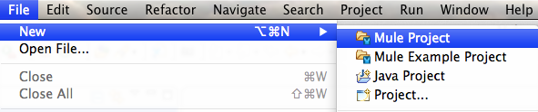
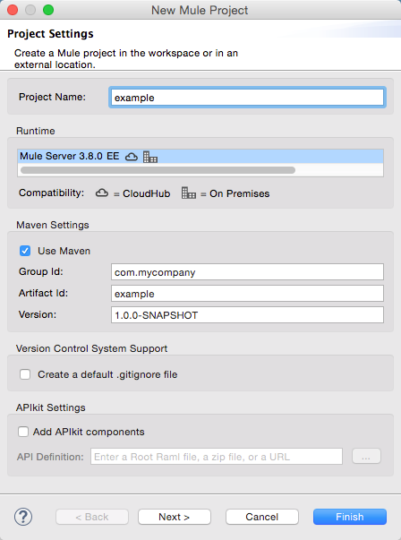
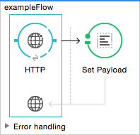
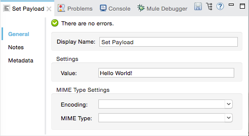
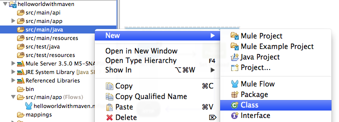
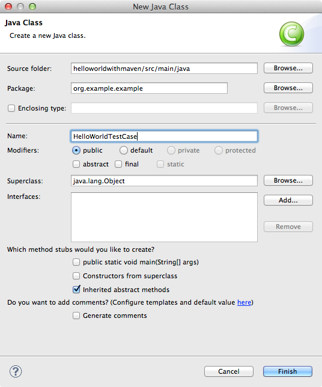
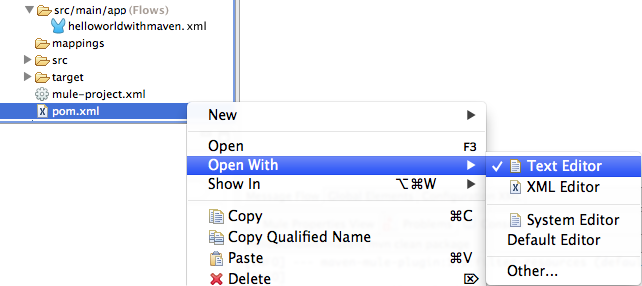

Building a Mule Application with Maven in Studio
This guide walks you through creating a Mavenized Mule Application project from scratch. It covers providing the project with unit tests, maintaining its POM file, then building and deploying the project.
Prerequisites
This document assumes that you have downloaded and installed Anypoint Studio. If you do not have any previous experience with Eclipse or an Eclipse-based IDE, review the brief introduction to the Anypoint Studio interface. The document also assumes you’re familiar with Apache Maven and know what it’s used for.
Creating a Maven Project
-
In Studio select File > New > Mule Project.
 -
Mark the checkbox Create POM file for project and maintain with Maven. Then, define a Group Id, Artifact Id, and Version for your new project. Click Finish.
If you see a message Maven is currently disabled, configure Maven click the link to enable Maven in your instance of Anypoint Studio. -
Studio builds your Maven Project automatically. If everything works correctly, you should see a
BUILD SUCCESSmessage on the console output.
Build a Simple Project
Build the following flow in your project:
Studio Visual Editor
-
Drag an HTTP Connector and a Set Payload Component into your flow:
 -
Open the connector’s properties editor and Create a new Connector Configuration element by clicking the green plus sign
 .
. -
Fill in the two required fields: Host and Port. Set the host to
localhostand leave the port as the default value8081.Field Value Name
HTTP_Listener_ConfigurationHost
localhostPort
8081 -
Back in the connector’s properties editor, leave the path as the default
"/" -
Configure the Set Payload component to set the value to "Hello World!", as shown below:

XML Editor
Create the following simple flow. It includes an http:inbound-endpoint with default values and a set-payload component that sets the payload to "Hello World!".
<http:listener-config name="HTTP_Listener_Configuration" host="localhost" port="8081"/>
<flow name="exampleFlow1" doc:name="exampleFlow1">
<http:listener config-ref="HTTP_Listener_Configuration" path="/" doc:name="HTTP Connector"/>
<set-payload value="Hello World!" doc:name="Set Payload"/>
</flow-
Now try it out by running your project on the embedded server within Anypoint Studio. Click the project name, then Run As > Mule Application.
-
Open a browser window and go to
http://localhost:8081. -
You should see a "Hello World!" message in your browser.
Adding a Unit Test
-
Now it’s time to add a unit test. To do so, right-click your project’s
src/test/javafolder, then select New > Class. -
Name your class something like HelloWorldTestCase, enter a Package name of your choice, then hit Finish.
 -
Modify the newly created class (HelloWorldTestCase.java) with the following code:
package org.example.example; import static org.junit.Assert.*; import java.util.HashMap; import java.util.Map; import org.junit.Test; import org.mule.api.MuleMessage; import org.mule.api.client.MuleClient; import org.mule.tck.junit4.FunctionalTestCase; import org.mule.transport.NullPayload; public class HelloWorldTestCase extends FunctionalTestCase { (1) private static String MESSAGE = "Hello world!"; @Override protected String getConfigFile() { return "example.xml"; } @Test public void clientTestCase() throws Exception { MuleClient client = muleContext.getClient(); (2) Map<String, Object> props = new HashMap<String, Object>(); props.put("http.method", "GET"); MuleMessage result = client.send("http://localhost:8081", "", props); (3) assertNotNull(result); assertFalse(result.getPayload() instanceof NullPayload); (4) assertEquals(MESSAGE, result.getPayloadAsString()); } }1 This class extends FunctionalTestCase, which is Mule’s implementation of an abstract JUnit test case. For more information, see Functional Testing. 2 Creates a new Mule client. 3 Sends the client the HTTP URL with the HTTP GET method. 4 Assert that the return is not null and is equal to "Hello World!".
Running the Application with Maven
-
In the package explorer, right-click your project, then select Run As > Mule Application with Maven.
-
Keep an eye on the console below to see the messages that Maven posts during the build process. If you see a “BUILD SUCCESS” message, this means Maven has executed the test and deployed the application successfully.
Managing Dependencies
In Studio, when you drag and drop additional building blocks onto your canvas in a project with Maven support enabled, Studio updates your POM file automatically with the required dependencies. (You can try this out yourself by opening your pom.xml to see what is inside it, then adding something like a Database Connector to your flow, saving your project, then opening your pom.xml again to see the dependency has been added.) However, there are some cases where you might have to manage your POM file manually. For example, if you add logic into your test case that relies on a dependency, you have to add that dependency to your POM file yourself, as described here.
-
In your package explorer, look for the pom.xml file and open it.
 -
Add your additional dependencies. To complete this example, you’ll need to add these dependencies:
<dependency> <groupId>com.jayway.restassured</groupId> <artifactId>rest-assured</artifactId> <version>2.3.1</version> <scope>test</scope> <exclusions> <exclusion> <groupId>org.groovy-lang</groupId> <artifactId>groovy</artifactId> </exclusion> </exclusions> </dependency> <dependency> <groupId>org.groovy-lang</groupId> <artifactId>groovy-all</artifactId> <version>2.2.1</version> <scope>test</scope> </dependency> <dependency> <groupId>commons-cli</groupId> <artifactId>commons-cli</artifactId> <version>1.1</version> </dependency> -
Open the test class you created in a previous section,
HelloWorldTestCase.java, and add a class you’ve added as a dependency. For example:import static com.jayway.restassured.RestAssured.*;
-
You can now use the new Java library in your test case file. For example, add the REST-assured DSL https://code.google.com/p/rest-assured/ to your test case file.
@Test public void dependencyClientTestCase() throws Exception { String response = get("http://localhost:8081").body().asString(); assertEquals(MESSAGE, response); } -
Save your project, then run the build again by again right-clicking the project name and selecting Run As > Mule Application with Maven.
-
You should see in the console that Studio downloads the dependencies you added, then builds the project correctly.
Troubleshooting
If Maven is well-configured at the time you build your project, then all of the necessary dependencies should be in place and no extra steps are needed. However, if for any reason Maven does not work properly while creating your project, these dependencies are not included. If this happens, Studio still allows you to add these dependencies later on.
In the package explorer, right-click your project, then select Maven support in Studio > Populate Maven repository.
This populates your local Maven repository (in Linux, typically found in $HOME/.m2/repository/) with all the modules necessary for your version of Mule. The console notifies you of the progress of the importing process.
See Also
-
Read more about Using Maven with Mule.
-
Learn how to configure your Studio Preferences to work with Maven.
-
Learn how to "mavenize" an existing Anypoint Studio project.
-
Learn how to import an existing Maven project into Anypoint Studio.
-
Access additional Maven reference and configuration information.